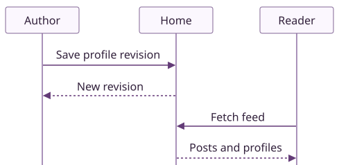

Feeds, profiles and names
A feed brings together signed posts, replies and votes with the profile details and visibility rules that apply when someone reads it.
Reading a named post
The author saves a profile against its expected revision. A reader’s Home resolves named bylines when building a feed. After the next sync, an edit can appear beside an earlier post.

From events to conversations
A reply names a parent in the community. A vote names a target and sets a value of −1, 0 or +1. The projection combines votes by account, orders conversations using Home acceptance time and event ID, and applies deletion and moderation decisions. The response is a bounded view. Older events can remain stored after conversations fall outside the response limit.
A current profile and a lasting byline
On a Home with a configured username domain, an authenticated account claims a case-insensitive local name. The Home signs a separate username receipt for each named event. A peer verifies the receipt and uses its trusted domain mapping for the originating Home. Display names, photos and bios come from a revisioned profile. Anonymous posts omit the public account reference and profile. Signing identifiers remain visible to Homes.
Nearby, cached and personalized reads
A nearby request supplies a center and radius. The Home applies distance filtering before feed limits. Location-bearing posts share a rounded area. All cities omits location on new posts. An authenticated feed can also apply account blocks, anonymous-content preferences and minimum account age. Age measures when this Home first saw an account.
What stays on the device
The app can show cached conversations and overlay its pending outbox. Bookmarks, local hides and muted-thread preferences affect the local reading experience. Sync reconciles accepted IDs and known deletions. A peer can request newer profile revisions for named authors in a shared community.